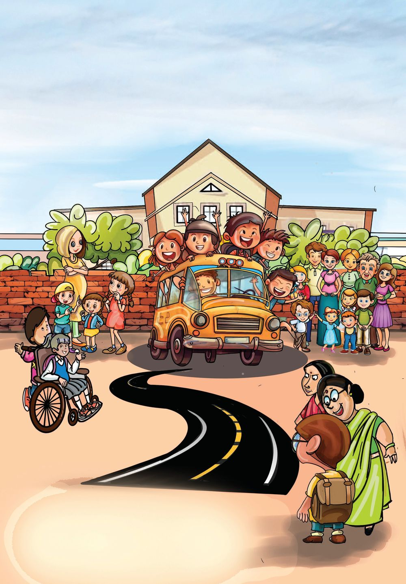
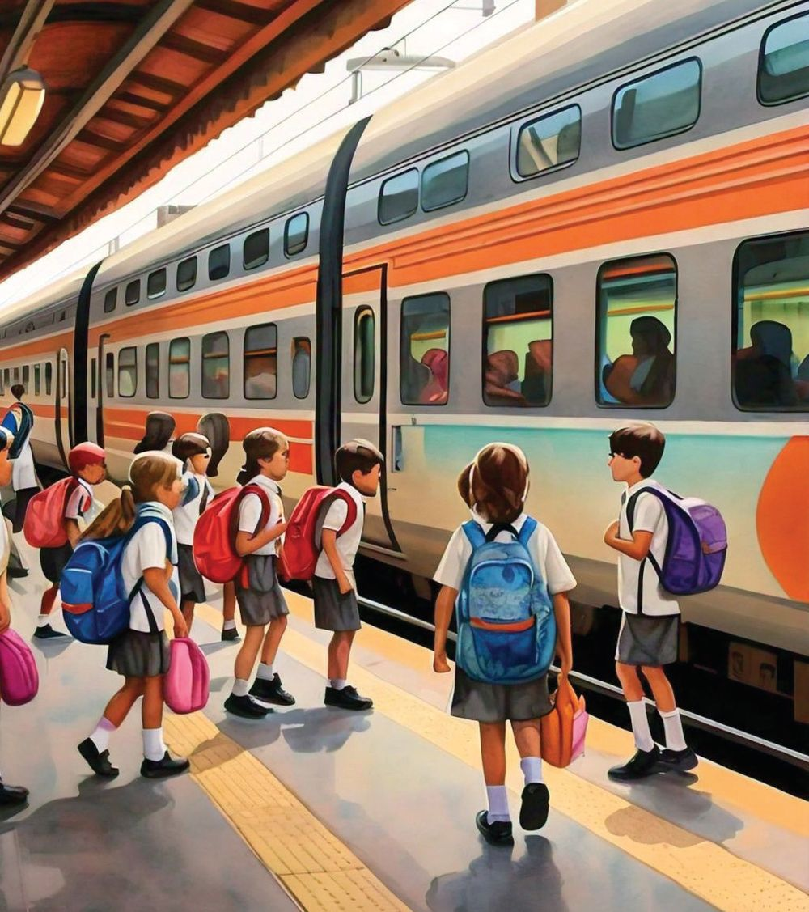
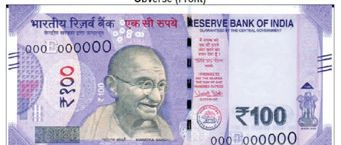
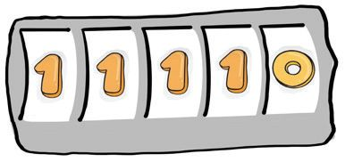
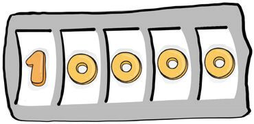
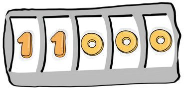
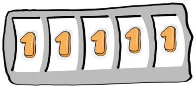

3
How Many Numbers
Mitra and friends start their study tour today. They are going to Ernakulam by train.

3
How Many Numbers
Mitra and friends start their study tour today. They are going to Ernakulam by train.







Mathematics
Standard - IV
At The Railway Station See the notes and coins given to buy tickets for the train journey. How much money was given in all?
Total amount 36


How Many Numbers
Tourist centres See a board at the railway station. It gives the distances from Ernakulam to various tourist centres in India. Place
Distance
Hill Palace
11 km
Goa
744 km
Mysuru
385 km
Kanyakumari
307 km
Hyderabad Film City
1112 km
Red Fort
2592 km
Taj Mahal
2424 km
Which is the farthest tourist centre? And the nearest ? Arrange these in order from the farthest to the nearest. Place
Distance
37


Mathematics
Standard - IV
Castle
Let’s go to the other side. There’ s a ramp.
Children are waiting in a line to enter the castle. Their tickets have consecutive numbers. Mitra is first in the line and her number is 2986. Sandra’s number is 3010.
From Mitra to Sandra, how many children are in the line?
What is the number of Ishan, who stands in front of Sandra?
Write the numbers of the children in front and at the back of the one with number 3010. Starting from the number just behind 3010, what is the 20th number?
Write the number of Maju, who is the 15th in the line.
Write the numbers from 2986 to 3010 in order.
38


How Many Numbers
Water Metro After seeing the castle, the children got into the water metro. Those in the Water Metro got food coupons.
Those in Mitra’s group got coupon numbers between 8000 and 9000. And the sum of the digits of each number was 10. Write these numbers.
Puzzle Corner AAB +
Sum of Digits How many numbers are there between 7000 and 8000 with their sum of digits 10? Write them in your notebook.
A BCCC A = ............. B = ............. C = .............
39






Mathematics
Standard - IV
Exhibition
Those visiting the exhibition in the children’s park are given prize coupons. The winning numbers are chosen by drawing lots. Children are waiting before the screen showing the winning numbers. Write the number displayed as the wheel stops at each position. 10000 11000
Ten Thousand
..................
..................
..................
..................
..................
How many four-digit numbers?
How many four-digit numbers can be made with just the two digits 9 and 0? What are they?
Prize for the number with sum of digits 5. Winning number
What is your number, Meera?
9000
Write them in order from the largest to the smallest.
40

How Many Numbers
Write numbers, as shown for the first... • 5 thousands, 4 hundreds, 3 tens, 2 ones 5432 54 hundreds, 32 ones
......
543 tens, 2 ones
......
5432 ones
......
• 82 hundreds
......
820 tens
......
8200 ones
......
7104
. . . . . thousands, . . . . . hundreds, . . . . . tens,. . . . . ones
• . . . . . . hundreds, . . . . . ones
• . . . . . . thousands, . . . . . ones
• . . . . . . thousands,. . . . . . tens, . . . . . ones
Number Wheel Fill up the blanks in the number wheel. .... e On
....
.....
.....
Th o ..... Ten usan ...O d ne
.....Thousand ........One
....... Hundred
....... ഒന്ന്്
.......
One
5
T ..... hou H s
an u 3 T ndr d ..... en ed ...O ne
.....Thousand .....Hundred ........One
5633
.
...
...
.....Hundred .....Ten ........One
n Te ... . ... e n O
41

Mathematics
Standard - IV
Splitting up How many ones? How many tens? How many hundreds?
10000
Ten thousands Ten thousand ones Thousand tens Hundred hundreds
Complete the following as given below.
............... ones ............... tens ............... hundreds ............... thousands
6700
13000 Puzzle corner
Who am I?
.............................. ..............................
6 hundreds 6 tens 6 thousands 6 ones.
..............................
Ernakulam to Amritsar The table shows the stations at which a train from Ernakulam to Amritsar stops and their distances from Ernakulam. Find the first station at which the train stops after leaving Ernakulam. Write the other stations and distances in the correct order. Station
Distance
Kasaragod
368 km
Mangaluru
415 km
Kozhikode
193 km
Amritsar
3092 km
Surat
1522 km
New Delhi Ludhiana
2643 km
42
2956 km
Station
Distance


How Many Numbers
Continue The Pattern • 10050, 10051, 10052, ................, ................, ................ • 11085, 11086, 11087, ................, ................, ............... • 19995, 19996, 19997, ................, ................, ................ • 12320, 12340, 12360, ................, ................, ................ What I found out
Airplane After the tour, they return in an airplane. A screen at the airport displayed the numbers of flights arriving and departing. Flight number has four digits.
What’s our flight number?
Write the flight number of an airplane?
The number formed by the digits at the hundred’s and ten’s places is double the number formed by the digits at the thousand’s and hundred’s places.
The number formed by the digits at the ten’s and one’s places is double the number formed by the digits at the hundred’s and ten’s places.
43


Mathematics
Standard - IV
Roman Numerals Numbers there. They’re the Roman numerals
No numbers in this clock!
I
Numbers of clock in Roman numerals
- 1
VII - 7
II - 2
VIII - 8
III - 3
IX
- 9
IV - 4
X
- 10
V - 5
XI
- 11
VI - 6
XII - 12
Numbers in Abacus See the abacus.
Ten Thousand Thousand Hundred
Ten
one
• Write all five-digit numbers that can be shown in the abacus using just two beads.
How Many Hundreds?
• Write the largest and smallest five-digit numbers that can be made using the digits 1 to 5. • How many hundreds in the largest number? • How many hundreds in the smallest number?
44

How Many Numbers
1. Fill up the blanks • 9875 - 9 thousands, . . . . . . hundreds, . . . . . . tens, . . . . . . ones • 6307 - . . . . . . thousands, . . . . . . tens, . . . . . .ones • 4218 - . . . . . . hundreds, . . . . . .ones • . . . . . . - 5 thousands, 6 hundreds, 0 tens, 8 ones • . . . . . . - 8 thousands, 12 tens, 0 ones • . . . . . . - 16 hundreds, 25 ones 2.
3.
In the number 6315, the value of the digit 6 is 6000. In each of the following numbers, find the value of 3. 8573
...........................
7835
............................
3578
............................
5379
............................
The total train fare from Thiruvananthapuram to Ernakulam is 3625 rupees. Since there is a concession for school children, only 2000 rupees was paid. How much is the concession?
4. Write the numbers in the empty cells
486 301 •
185 829
1000 555
556
Reach 8 without repeating any number.
920 618
743 8
45


Mathematics
Standard - IV
5.
27 children are standing in a line. The one in the middle has ticket number 4068. What is the ticket number of the first in the line? And that of the last in the line?
6.
10 thousands is equal to how many 500’s?
7.
Which of the numbers below is 50 ones, 50 tens and 50 hundreds taken together? (A) 5555
8.
(B) 5505
(C) 5550
(D) 5055
Continue the pattern. 4080, 4085, 4091, 4098, . . . . . . , . . . . . . , . . . . . . , . . . . . .
9.
Calculate. • How many numbers are there between 9000 and 10000?
......, numbers between 9000 and 9100.
......, numbers between 9000 and 9500.
......, numbers between 9000 and 10000.
• How many odd numbers are there between 9000 and 10000? • How many even numbers are there between 9000 and 10000?
Investigation Take any two odd numbers and add them. Is the sum an odd number or an even number? What about the sum of three odd numbers? If the number of numbers added is an odd number, what type of number is the sum? If the number of numbers is even? Like this, add some even numbers. Write your findings in your notebook.
46